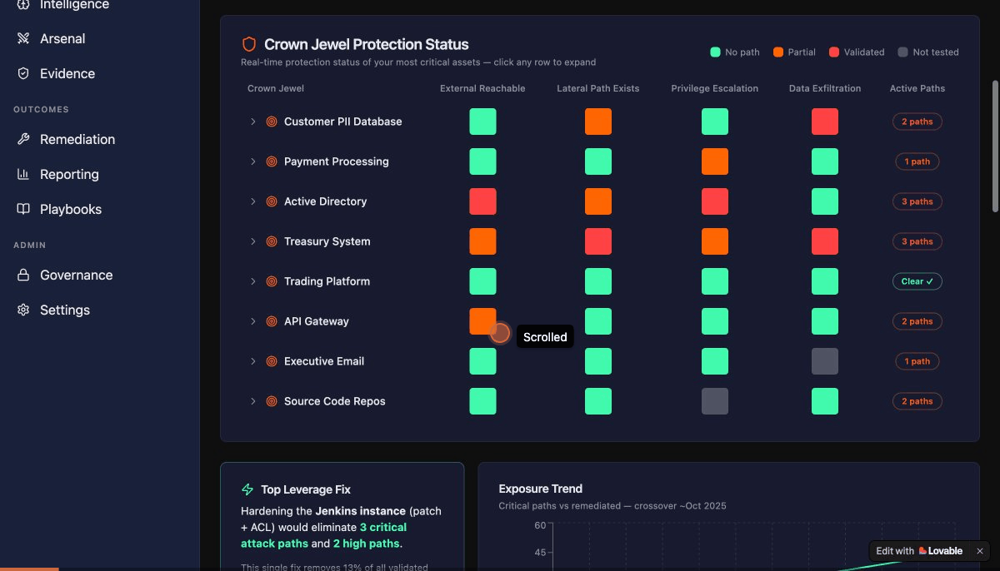

<!DOCTYPE html>
<html lang="en">
<head>
<meta charset="UTF-8">
<meta name="viewport" content="width=device-width, initial-scale=1.0">
<title>ACME AEV Platform — Strategic Walkthrough</title>
<style>
  @import url('https://fonts.googleapis.com/css2?family=Inter:wght@300;400;500;600;700;800&display=swap');

  :root {
    --bg-primary: #0a0a0f;
    --bg-secondary: #111118;
    --bg-card: #16161f;
    --bg-elevated: #1e1e2a;
    --text-primary: #e8e8ef;
    --text-secondary: #9898a8;
    --text-muted: #6868788;
    --accent-orange: #FF6200;
    --accent-purple: #5F19D7;
    --accent-green: #40F99B;
    --accent-blue: #156082;
    --border: #2a2a38;
    --gradient-hero: linear-gradient(135deg, #0a0a0f 0%, #1a0a2e 50%, #0a0a0f 100%);
  }

  * { margin: 0; padding: 0; box-sizing: border-box; }

  body {
    font-family: 'Inter', -apple-system, sans-serif;
    background: var(--bg-primary);
    color: var(--text-primary);
    line-height: 1.7;
    -webkit-font-smoothing: antialiased;
  }

  /* Hero Section */
  .hero {
    min-height: 100vh;
    display: flex;
    flex-direction: column;
    justify-content: center;
    align-items: center;
    text-align: center;
    padding: 4rem 2rem;
    background: var(--gradient-hero);
    position: relative;
    overflow: hidden;
  }

  .hero::before {
    content: '';
    position: absolute;
    top: 0; left: 0; right: 0; bottom: 0;
    background: radial-gradient(ellipse at 50% 0%, rgba(95,25,215,0.15) 0%, transparent 60%);
    pointer-events: none;
  }

  .hero-badge {
    display: inline-flex;
    align-items: center;
    gap: 0.5rem;
    padding: 0.4rem 1.2rem;
    border: 1px solid var(--accent-purple);
    border-radius: 100px;
    font-size: 0.75rem;
    font-weight: 500;
    letter-spacing: 0.08em;
    text-transform: uppercase;
    color: var(--accent-purple);
    margin-bottom: 2rem;
    background: rgba(95,25,215,0.08);
  }

  .hero h1 {
    font-size: clamp(2.5rem, 5vw, 4.5rem);
    font-weight: 800;
    line-height: 1.1;
    margin-bottom: 1.5rem;
    letter-spacing: -0.03em;
  }

  .hero h1 span {
    background: linear-gradient(135deg, var(--accent-orange), var(--accent-purple));
    -webkit-background-clip: text;
    -webkit-text-fill-color: transparent;
    background-clip: text;
  }

  .hero-subtitle {
    font-size: 1.2rem;
    color: var(--text-secondary);
    max-width: 640px;
    margin-bottom: 3rem;
    font-weight: 300;
  }

  .hero-gif-container {
    width: 100%;
    max-width: 960px;
    border-radius: 12px;
    overflow: hidden;
    border: 1px solid var(--border);
    box-shadow: 0 32px 64px rgba(0,0,0,0.5), 0 0 0 1px rgba(255,255,255,0.03);
    margin-top: 1rem;
    position: relative;
  }

  .hero-gif-container img {
    width: 100%;
    display: block;
  }

  .hero-gif-placeholder {
    width: 100%;
    aspect-ratio: 16/9;
    background: var(--bg-card);
    display: flex;
    flex-direction: column;
    align-items: center;
    justify-content: center;
    gap: 1rem;
    color: var(--text-secondary);
    font-size: 0.9rem;
  }

  .hero-gif-placeholder .icon {
    width: 48px; height: 48px;
    border-radius: 50%;
    background: rgba(255,98,0,0.15);
    display: flex; align-items: center; justify-content: center;
    color: var(--accent-orange);
    font-size: 1.5rem;
  }

  .live-link {
    display: inline-flex;
    align-items: center;
    gap: 0.5rem;
    padding: 0.75rem 1.5rem;
    background: var(--accent-orange);
    color: white;
    text-decoration: none;
    border-radius: 8px;
    font-weight: 600;
    font-size: 0.9rem;
    margin-top: 2rem;
    transition: all 0.2s;
  }

  .live-link:hover {
    transform: translateY(-1px);
    box-shadow: 0 8px 24px rgba(255,98,0,0.3);
  }

  /* Navigation */
  .toc {
    position: sticky;
    top: 0;
    z-index: 100;
    background: rgba(10,10,15,0.92);
    backdrop-filter: blur(16px);
    border-bottom: 1px solid var(--border);
    padding: 0 2rem;
    overflow-x: auto;
  }

  .toc-inner {
    max-width: 1100px;
    margin: 0 auto;
    display: flex;
    gap: 0;
  }

  .toc a {
    padding: 1rem 1.2rem;
    font-size: 0.78rem;
    font-weight: 500;
    color: var(--text-secondary);
    text-decoration: none;
    white-space: nowrap;
    border-bottom: 2px solid transparent;
    transition: all 0.2s;
    letter-spacing: 0.02em;
  }

  .toc a:hover {
    color: var(--text-primary);
    border-bottom-color: var(--accent-orange);
  }

  /* Sections */
  .section {
    max-width: 1100px;
    margin: 0 auto;
    padding: 6rem 2rem;
  }

  .section-header {
    margin-bottom: 3rem;
  }

  .section-number {
    display: inline-block;
    font-size: 0.7rem;
    font-weight: 600;
    letter-spacing: 0.12em;
    text-transform: uppercase;
    color: var(--accent-orange);
    margin-bottom: 0.75rem;
  }

  .section h2 {
    font-size: 2.2rem;
    font-weight: 700;
    letter-spacing: -0.02em;
    margin-bottom: 1rem;
    line-height: 1.2;
  }

  .section-lead {
    font-size: 1.1rem;
    color: var(--text-secondary);
    max-width: 720px;
    line-height: 1.8;
  }

  /* Content blocks */
  .content-grid {
    display: grid;
    grid-template-columns: 1fr 1fr;
    gap: 2rem;
    margin-top: 2rem;
  }

  @media (max-width: 768px) {
    .content-grid { grid-template-columns: 1fr; }
  }

  .insight-card {
    background: var(--bg-card);
    border: 1px solid var(--border);
    border-radius: 10px;
    padding: 1.8rem;
    transition: all 0.2s;
  }

  .insight-card:hover {
    border-color: var(--accent-purple);
    transform: translateY(-2px);
  }

  .insight-card h3 {
    font-size: 1rem;
    font-weight: 600;
    margin-bottom: 0.75rem;
    display: flex;
    align-items: center;
    gap: 0.5rem;
  }

  .insight-card p {
    font-size: 0.9rem;
    color: var(--text-secondary);
    line-height: 1.7;
  }

  .insight-card .tag {
    display: inline-block;
    padding: 0.2rem 0.6rem;
    border-radius: 4px;
    font-size: 0.7rem;
    font-weight: 600;
    letter-spacing: 0.04em;
    margin-top: 0.75rem;
  }

  .tag-page { background: rgba(255,98,0,0.12); color: var(--accent-orange); }
  .tag-concept { background: rgba(95,25,215,0.12); color: var(--accent-purple); }
  .tag-outcome { background: rgba(64,249,155,0.12); color: var(--accent-green); }

  /* Narrative blocks */
  .narrative {
    font-size: 1.05rem;
    color: var(--text-secondary);
    line-height: 1.9;
    max-width: 720px;
    margin-top: 1.5rem;
  }

  .narrative strong {
    color: var(--text-primary);
    font-weight: 600;
  }

  .narrative em {
    color: var(--accent-orange);
    font-style: normal;
    font-weight: 500;
  }

  /* Callout */
  .callout {
    background: var(--bg-elevated);
    border-left: 3px solid var(--accent-orange);
    padding: 1.5rem 2rem;
    border-radius: 0 8px 8px 0;
    margin: 2rem 0;
    font-size: 0.95rem;
    color: var(--text-secondary);
  }

  .callout strong {
    color: var(--accent-orange);
  }

  /* Page reference */
  .page-ref {
    display: inline-flex;
    align-items: center;
    gap: 0.4rem;
    padding: 0.3rem 0.8rem;
    background: rgba(21,96,130,0.15);
    border: 1px solid rgba(21,96,130,0.3);
    border-radius: 6px;
    font-size: 0.8rem;
    color: var(--accent-blue);
    text-decoration: none;
    font-weight: 500;
    transition: all 0.2s;
  }

  .page-ref:hover {
    background: rgba(21,96,130,0.25);
    border-color: var(--accent-blue);
  }

  /* Divider */
  .divider {
    border: none;
    height: 1px;
    background: var(--border);
    margin: 0;
  }

  /* Flow diagram */
  .flow {
    display: flex;
    align-items: center;
    gap: 0;
    margin: 2.5rem 0;
    flex-wrap: wrap;
    justify-content: center;
  }

  .flow-step {
    padding: 0.7rem 1.2rem;
    background: var(--bg-card);
    border: 1px solid var(--border);
    border-radius: 8px;
    font-size: 0.82rem;
    font-weight: 500;
    text-align: center;
    min-width: 100px;
  }

  .flow-step.active {
    border-color: var(--accent-orange);
    background: rgba(255,98,0,0.08);
    color: var(--accent-orange);
  }

  .flow-arrow {
    color: var(--text-muted);
    font-size: 1.2rem;
    padding: 0 0.3rem;
    color: var(--accent-purple);
    opacity: 0.5;
  }

  /* Stats row */
  .stats-row {
    display: flex;
    gap: 2rem;
    margin: 2rem 0;
    flex-wrap: wrap;
  }

  .stat {
    text-align: center;
  }

  .stat-value {
    font-size: 2rem;
    font-weight: 700;
    color: var(--accent-orange);
    line-height: 1;
  }

  .stat-label {
    font-size: 0.75rem;
    color: var(--text-secondary);
    margin-top: 0.3rem;
    text-transform: uppercase;
    letter-spacing: 0.06em;
  }

  /* Participants */
  .participant-grid {
    display: grid;
    grid-template-columns: repeat(5, 1fr);
    gap: 1rem;
    margin: 2rem 0;
  }

  @media (max-width: 768px) {
    .participant-grid { grid-template-columns: repeat(2, 1fr); }
  }

  .participant {
    text-align: center;
    padding: 1.5rem 1rem;
    background: var(--bg-card);
    border: 1px solid var(--border);
    border-radius: 10px;
  }

  .participant .icon-circle {
    width: 40px; height: 40px;
    border-radius: 50%;
    margin: 0 auto 0.75rem;
    display: flex; align-items: center; justify-content: center;
    font-size: 1.2rem;
  }

  .participant h4 {
    font-size: 0.82rem;
    font-weight: 600;
    margin-bottom: 0.3rem;
  }

  .participant p {
    font-size: 0.72rem;
    color: var(--text-secondary);
  }

  /* Footer */
  .footer {
    text-align: center;
    padding: 4rem 2rem;
    border-top: 1px solid var(--border);
    color: var(--text-secondary);
    font-size: 0.85rem;
  }

  .footer a {
    color: var(--accent-orange);
    text-decoration: none;
  }

  /* Scroll animations */
  .fade-in {
    opacity: 0;
    transform: translateY(24px);
    transition: all 0.6s ease-out;
  }

  .fade-in.visible {
    opacity: 1;
    transform: translateY(0);
  }
</style>
</head>
<body>

<!-- HERO -->
<section class="hero">
  <div class="hero-badge">Strategic Direction</div>
  <h1>The <span>ACME AEV</span> Platform</h1>
  <p class="hero-subtitle">
    A preemptive security platform that shifts offensive security from periodic testing
    to a continuous, autonomous, evidence-grade operating model &mdash; governed by humans,
    powered by the crowd, and organised around what matters most: your crown jewels.
  </p>

  <div class="hero-gif-container">
    
  </div>

  <a href="https://crownjewel-guardian.lovable.app" target="_blank" class="live-link">
    Launch Live Mockup &rarr;
  </a>
</section>

<!-- NAV -->
<nav class="toc">
  <div class="toc-inner">
    <a href="#crown-jewels">Crown Jewels</a>
    <a href="#attack-paths">Attack Paths</a>
    <a href="#closed-loop">The Closed Loop</a>
    <a href="#orchestration">Orchestration</a>
    <a href="#arsenal">The Arsenal</a>
    <a href="#operators">Operators</a>
    <a href="#remediation">Remediation</a>
    <a href="#evidence">Evidence</a>
    <a href="#governance">Governance</a>
    <a href="#flywheel">The Flywheel</a>
  </div>
</nav>

<!-- 1. CROWN JEWELS -->
<section class="section fade-in" id="crown-jewels">
  <div class="section-header">
    <div class="section-number">01 &mdash; The Organising Principle</div>
    <h2>Crown Jewels as Centre of Gravity</h2>
    <p class="section-lead">
      Traditional vulnerability management treats all assets equally. ACME AEV inverts this entirely:
      everything is organised around the assets that matter most to the business &mdash; the <em>crown jewels</em>.
      Every attack path, every finding, every remediation decision flows from the question:
      <strong>"Can an attacker reach what we cannot afford to lose?"</strong>
    </p>
  </div>

  <div class="content-grid">
    <div class="insight-card">
      <h3>&#128737; Protection Status Heatmap</h3>
      <p>
        The Dashboard centrepiece is the Crown Jewel Protection Status &mdash; a heatmap showing each critical asset
        across five attack dimensions: external reachability, lateral path existence, privilege escalation,
        data exfiltration, and active validated paths. At a glance, a CISO sees which jewels are exposed.
      </p>
      <span class="tag tag-page">Dashboard</span>
    </div>
    <div class="insight-card">
      <h3>&#127919; Business-Anchored Metrics</h3>
      <p>
        The headline metric isn't "vulnerabilities found" &mdash; it's <strong>14 of 17 crown jewels protected</strong>.
        This reframes security posture in language the board understands: protection of business value,
        not compliance checkboxes. The 3 unprotected jewels drive every operational priority.
      </p>
      <span class="tag tag-outcome">Strategic Outcome</span>
    </div>
  </div>

  <div class="callout">
    <strong>Why this matters:</strong> When a CISO presents to the board, they can now say
    "We have validated protection of 14 of our 17 most critical assets, and here are the 3 we're working on"
    &mdash; rather than "We found 2,847 vulnerabilities last quarter."
  </div>

  <p style="margin-top: 1rem;">
    <a href="https://crownjewel-guardian.lovable.app/" target="_blank" class="page-ref">&#8594; View Dashboard</a>
  </p>
</section>

<hr class="divider">

<!-- 2. ATTACK PATHS -->
<section class="section fade-in" id="attack-paths">
  <div class="section-header">
    <div class="section-number">02 &mdash; Validated Attack Intelligence</div>
    <h2>Attack Path Validation</h2>
    <p class="section-lead">
      ACME AEV doesn't just scan for vulnerabilities &mdash; it validates complete attack paths from external
      entry point to crown jewel. Each path is a proven chain of exploitation, mapped to MITRE ATT&CK,
      with a concrete business impact assessment attached.
    </p>
  </div>

  <div class="narrative">
    <p>
      Consider the critical path shown in the mockup: <strong>External &rarr; Jenkins &rarr; Treasury DB</strong>.
      This isn't a theoretical risk &mdash; it's a 7-step validated kill chain, autonomously discovered
      in 4.2 hours, that proves an attacker can move from public internet reconnaissance through
      an exposed Jenkins instance, harvest credentials, move laterally through the corporate VLAN,
      abuse Kerberos delegation, and ultimately reach the Treasury Database containing
      <em>10.2 million customer PII records</em>. Estimated financial impact: <strong>$45&ndash;120M</strong>.
    </p>
    <p style="margin-top: 1rem;">
      This is the difference between a vulnerability report and an <em>evidence-grade threat narrative</em>.
    </p>
  </div>

  <div class="content-grid" style="margin-top: 2rem;">
    <div class="insight-card">
      <h3>&#9888;&#65039; Business Impact Assessment</h3>
      <p>
        Every attack path carries a dollar-denominated impact estimate and regulatory context.
        This isn't security talking to security &mdash; it's security talking the language of enterprise risk.
      </p>
      <span class="tag tag-concept">Strategic Concept</span>
    </div>
    <div class="insight-card">
      <h3>&#9889; Leverage Fix</h3>
      <p>
        The platform identifies that hardening the Jenkins instance (a single fix) collapses this path
        <strong>and 2 additional paths</strong> &mdash; eliminating 13% of all critical paths.
        This is <em>leverage remediation</em>: fix once, collapse many.
      </p>
      <span class="tag tag-outcome">Leverage Remediation</span>
    </div>
  </div>

  <p style="margin-top: 1.5rem;">
    <a href="https://crownjewel-guardian.lovable.app/attack-paths" target="_blank" class="page-ref">&#8594; View Attack Paths</a>
  </p>
</section>

<hr class="divider">

<!-- 3. CLOSED LOOP -->
<section class="section fade-in" id="closed-loop">
  <div class="section-header">
    <div class="section-number">03 &mdash; The Core Innovation</div>
    <h2>The Closed Loop</h2>
    <p class="section-lead">
      The strategic centrepiece of ACME AEV is the <em>closed loop</em> &mdash; a continuous cycle where
      every finding is not just discovered but evidenced, remediated, re-validated, and then
      converted into a permanent regression test. Nothing falls through the cracks. Nothing stays "fixed"
      without proof.
    </p>
  </div>

  <div class="flow">
    <div class="flow-step active">Context &amp; Scope</div>
    <span class="flow-arrow">&rarr;</span>
    <div class="flow-step">Validation</div>
    <span class="flow-arrow">&rarr;</span>
    <div class="flow-step">Evidence</div>
    <span class="flow-arrow">&rarr;</span>
    <div class="flow-step">Remediation</div>
    <span class="flow-arrow">&rarr;</span>
    <div class="flow-step">Re-validation</div>
    <span class="flow-arrow">&rarr;</span>
    <div class="flow-step active">Regression Test</div>
  </div>

  <div class="narrative">
    <p>
      The <strong>Finding Lifecycle</strong> stepper on the Attack Paths page makes this loop visible.
      Finding F-2025-0847 is tracked through every stage &mdash; from discovery through evidence capture,
      remediation assignment, fix deployment, re-validation (did the fix actually work?), and finally
      to an active regression test that continuously ensures the vulnerability doesn't return.
    </p>
    <p style="margin-top: 1rem;">
      Each step links to the relevant page: <em>View Path</em> goes to Attack Paths,
      <em>View Evidence</em> goes to the Evidence store, <em>View Status</em> goes to Remediation,
      <em>View Proof</em> shows the re-validation result, and <em>View Test</em> links to the
      regression playbook. The loop is not just conceptual &mdash; it's navigable.
    </p>
  </div>

  <div class="callout">
    <strong>The strategic implication:</strong> Over time, the platform accumulates a growing library
    of regression tests. Each resolved vulnerability becomes a permanent sensor. The attack surface
    doesn't just shrink &mdash; it becomes <em>instrumented</em>.
  </div>
</section>

<hr class="divider">

<!-- 4. ORCHESTRATION -->
<section class="section fade-in" id="orchestration">
  <div class="section-header">
    <div class="section-number">04 &mdash; Human-Governed Autonomy</div>
    <h2>Three Modes of Orchestration</h2>
    <p class="section-lead">
      Autonomy without governance is reckless. Pure manual control doesn't scale.
      ACME AEV offers three orchestration modes, each calibrated to the trust level
      and risk tolerance of the engagement.
    </p>
  </div>

  <div class="content-grid" style="grid-template-columns: 1fr 1fr 1fr;">
    <div class="insight-card" style="border-top: 3px solid var(--accent-green);">
      <h3 style="color: var(--accent-green);">Fully Autonomous</h3>
      <p>
        External scanning and continuous validation run without human intervention.
        Agents execute within guardrails, blocked from out-of-scope networks,
        rate-limited, and logged to the audit trail. Ideal for non-production
        and external attack surface coverage.
      </p>
    </div>
    <div class="insight-card" style="border-top: 3px solid var(--accent-orange);">
      <h3 style="color: var(--accent-orange);">Approval-Gated</h3>
      <p>
        The default for production environments. Agents discover and plan,
        but critical exploitation attempts pause and await CISO approval.
        The Approval Queue on the Dashboard surfaces these decisions
        with full context and wait times.
      </p>
    </div>
    <div class="insight-card" style="border-top: 3px solid #f44;">
      <h3 style="color: #f44;">Human-Led</h3>
      <p>
        Certified operators drive the engagement directly &mdash; used for
        red team operations against the most sensitive crown jewels
        like the Treasury System. The platform provides infrastructure
        and tooling; humans provide judgment.
      </p>
    </div>
  </div>

  <div class="narrative" style="margin-top: 2rem;">
    <p>
      The <strong>Live Agent Activity Feed</strong> shows this governance in action:
      Agent-3 in the PCI Zone is <em>awaiting approval</em> for a privilege escalation attempt,
      whilst another test completed successfully and the system blocked an out-of-scope access attempt.
      This is what <strong>trust</strong> looks like in autonomous security &mdash; visible,
      auditable, and under the CISO's thumb.
    </p>
  </div>

  <p style="margin-top: 1.5rem;">
    <a href="https://crownjewel-guardian.lovable.app/orchestration" target="_blank" class="page-ref">&#8594; View Orchestration</a>
  </p>
</section>

<hr class="divider">

<!-- 5. ARSENAL -->
<section class="section fade-in" id="arsenal">
  <div class="section-header">
    <div class="section-number">05 &mdash; The Capability Ecosystem</div>
    <h2>Arsenal: The Capability Marketplace</h2>
    <p class="section-lead">
      The Arsenal is where ACME AEV transforms from a product into a <em>platform</em>.
      It's a governed marketplace of attack modules &mdash; contributed by internal teams,
      the crowd, partners, and even customers &mdash; vetted through a rigorous quality pipeline
      before entering the shared capability set.
    </p>
  </div>

  <div class="stats-row">
    <div class="stat"><div class="stat-value">892</div><div class="stat-label">Total Modules</div></div>
    <div class="stat"><div class="stat-value">247</div><div class="stat-label">Crowd-Contributed</div></div>
    <div class="stat"><div class="stat-value">89</div><div class="stat-label">Partner-Contributed</div></div>
    <div class="stat"><div class="stat-value">7</div><div class="stat-label">Pending Review</div></div>
  </div>

  <div class="narrative">
    <p>
      The <strong>Contribution Pipeline</strong> is the critical innovation: every new module
      passes through six stages &mdash; Submit, Auto Test, Peer Review, Safety Vet, Approved, Published.
      This means a bug bounty researcher's Kerberos delegation abuse chain and a partner's SAP
      exploitation module go through the same quality gate as internal tooling.
    </p>
    <p style="margin-top: 1rem;">
      The flywheel effect is visible in the data: 0xd34dc0de (a crowd researcher) contributed
      a Kerberos Delegation Abuse Chain that's already <em>Published</em>, reviewed by operator Alistair G.
      Meanwhile, Agent-7 &mdash; an <strong>autonomous discovery</strong> &mdash; submitted a DNS zone transfer
      module that's currently in Auto Test. The Arsenal grows from every direction simultaneously.
    </p>
  </div>

  <p style="margin-top: 1.5rem;">
    <a href="https://crownjewel-guardian.lovable.app/arsenal" target="_blank" class="page-ref">&#8594; View Arsenal</a>
  </p>
</section>

<hr class="divider">

<!-- 6. OPERATORS -->
<section class="section fade-in" id="operators">
  <div class="section-header">
    <div class="section-number">06 &mdash; The Operator Experience</div>
    <h2>Operator Console &amp; Infrastructure as a Service</h2>
    <p class="section-lead">
      Operators are both consumers and producers of capability. The Operator Console gives
      certified professionals a single pane of glass across their active engagements,
      the attack infrastructure they're using, their findings queue, and their contribution
      to the Arsenal ecosystem.
    </p>
  </div>

  <div class="content-grid">
    <div class="insight-card">
      <h3>&#128100; Operator Identity</h3>
      <p>
        <strong>Alistair G.</strong> is a Level 3 certified operator &mdash; authorised for
        both fully autonomous and manual engagement modes. His context bar shows
        3 active engagements across different orchestration modes, each targeting
        different crown jewel scopes.
      </p>
      <span class="tag tag-page">Operator Console</span>
    </div>
    <div class="insight-card">
      <h3>&#9729;&#65039; Attack Infrastructure as a Service</h3>
      <p>
        Five infrastructure instances across EU-West, US-East, AP-Southeast &mdash;
        with stealth profiles, IP rotation (47 IPs rotated today), PCI-isolated tenancies,
        and CI/CD pipeline integration. This is <em>cloud-native offensive infrastructure</em>
        with full governance.
      </p>
      <span class="tag tag-concept">IaaS</span>
    </div>
  </div>

  <div class="callout">
    <strong>Key insight:</strong> Every infrastructure instance logs to the Evidence Store,
    rotates credentials every 4 hours, restricts network egress to approved scope,
    and has the kill switch armed. This is how you run offensive operations at scale
    without losing control.
  </div>

  <p style="margin-top: 1.5rem;">
    <a href="https://crownjewel-guardian.lovable.app/operator-console" target="_blank" class="page-ref">&#8594; View Operator Console</a>
  </p>
</section>

<hr class="divider">

<!-- 7. REMEDIATION -->
<section class="section fade-in" id="remediation">
  <div class="section-header">
    <div class="section-number">07 &mdash; Fix Once, Collapse Many</div>
    <h2>Leverage Remediation</h2>
    <p class="section-lead">
      Not all fixes are equal. ACME AEV surfaces the fixes that deliver disproportionate
      impact &mdash; the single patch that collapses multiple attack paths,
      the one configuration change that protects three crown jewels simultaneously.
    </p>
  </div>

  <div class="narrative">
    <p>
      The Remediation page operates as a <strong>Kanban board</strong> with four columns:
      Awaiting Fix, Fix In Progress, Awaiting Re-validation, and Validated Closed.
      Each card carries its SLA countdown (with overdue items highlighted in red),
      engineering ticket reference (PR #4821), assigned team, and direct links to
      Evidence and Regression Test.
    </p>
    <p style="margin-top: 1rem;">
      The <em>re-validation</em> column is the strategic differentiator. A finding isn't "closed"
      because someone says they deployed a fix &mdash; it's closed because the platform
      <strong>re-tested the attack path and confirmed the fix works</strong>.
      The "Re-validation: Pass" badge on validated cards is proof, not promise.
    </p>
  </div>

  <div class="stats-row" style="margin-top: 2rem;">
    <div class="stat"><div class="stat-value">87%</div><div class="stat-label">Re-validation Pass Rate</div></div>
    <div class="stat"><div class="stat-value">3.2d</div><div class="stat-label">Mean Time to Remediate</div></div>
    <div class="stat"><div class="stat-value">1</div><div class="stat-label">SLA Overdue</div></div>
  </div>

  <p style="margin-top: 1.5rem;">
    <a href="https://crownjewel-guardian.lovable.app/remediation" target="_blank" class="page-ref">&#8594; View Remediation</a>
  </p>
</section>

<hr class="divider">

<!-- 8. EVIDENCE -->
<section class="section fade-in" id="evidence">
  <div class="section-header">
    <div class="section-number">08 &mdash; System of Record</div>
    <h2>Evidence-Grade Outputs</h2>
    <p class="section-lead">
      Every finding in the platform produces forensic-quality evidence with
      chain of custody, cryptographic integrity verification, and full provenance
      tracking. This isn't a vulnerability scanner &mdash; it's an <em>evidence system</em>.
    </p>
  </div>

  <div class="content-grid">
    <div class="insight-card">
      <h3>&#128274; Chain of Custody</h3>
      <p>
        Each evidence artefact tracks its complete provenance: Savant Agent-3 captured it at 14:32,
        the Evidence Vault sealed and hashed it at 14:32, and James Wilson reviewed it at 15:10.
        Three steps. Full accountability.
      </p>
      <span class="tag tag-concept">Forensic Integrity</span>
    </div>
    <div class="insight-card">
      <h3>&#9989; Integrity Verification</h3>
      <p>
        <strong>2,847 artefacts</strong>. <strong>100% integrity verified</strong>.
        Every hash is valid, every provenance chain is complete. The "Verify All Hashes" button
        lets auditors confirm this at any time. This is evidence that stands up to scrutiny.
      </p>
      <span class="tag tag-outcome">Audit-Ready</span>
    </div>
  </div>

  <div class="callout">
    <strong>The "Replay Attack" button</strong> is a powerful concept: at any point,
    you can re-execute the original exploitation proof to verify it still works &mdash;
    or confirm that remediation has closed the path. Evidence isn't static; it's replayable.
  </div>

  <p style="margin-top: 1.5rem;">
    <a href="https://crownjewel-guardian.lovable.app/evidence" target="_blank" class="page-ref">&#8594; View Evidence</a>
  </p>
</section>

<hr class="divider">

<!-- 9. GOVERNANCE -->
<section class="section fade-in" id="governance">
  <div class="section-header">
    <div class="section-number">09 &mdash; Trust Through Transparency</div>
    <h2>Governance &amp; the Kill Switch</h2>
    <p class="section-lead">
      Autonomous offensive security requires exceptional governance. The Governance page
      provides the controls that make the entire model trustworthy: an emergency kill switch,
      configurable policies, scope controls, and a comprehensive audit log.
    </p>
  </div>

  <div class="content-grid">
    <div class="insight-card">
      <h3>&#128721; Emergency Kill Switch</h3>
      <p>
        One button halts all agent activity across all engagements. Armed but not activated &mdash;
        the ultimate safety net for when something unexpected happens.
        This is the governance primitive that makes everything else possible.
      </p>
      <span class="tag tag-page">Governance</span>
    </div>
    <div class="insight-card">
      <h3>&#128220; Audit Log</h3>
      <p>
        Every action is logged: James Wilson approved a privilege escalation at 14:32,
        Agent-3 was automatically paused outside the testing window at 22:00,
        a scope boundaryØ\È\]YžHØ\˜ZÚ[‹ˆ›Ý[™È\[œÈ[ˆH\šË‚ˆÜ‚ˆÜ[ˆÛ\ÜÏHYÈYËXÛۘÙ\•˜[œÜ\™[˜ÞOÜÜ[‚ˆÙ]‚ˆÙ]‚‚ˆ]ˆÛ\ÜÏH›˜\œ˜]]™HˆÝ[OH›X\™Ú[‹]܈K\™[Nȏ‚ˆ‚ˆHݛۙϔØÛÜHÛ۝›ÛÏÜݛۙψÚ][˜ÛYKÑ^ÛYHÙÙÛ\ÈYš[™HH›Ý[™\šY\ˆوÚ]YÙ[ÈØ[ˆÝXÚˆˆ™]ÛܚÈ[™YØ[™]ÛܚÈ\™H^ÛYYÛؘ[K‚ˆHÒH›Û™H™\]Z\™\È\›Ý˜[YØ]Y[ÙKˆ\ÙH\™[‰ÝÝYÙÙ\Ý[ۜÈ	›Y\ÚˆHÞ\Ý[H[™›Ü˜Ù\È[K\ÈH]Y]ÙÈ[žHYÙ[LÈ›ØÚÙYœ›ÛHXØÙ\ÜÚ[™ÂˆÝ][ً\ØÛÜHÝX›™]LLŒŒÌMˆˆ›Ý™\˂ˆÜ‚ˆÙ]‚‚ˆÝ[OH›X\™Ú[‹]܈K\™[Nȏ‚ˆH™YHš΋ËØܛÝۚ™]Ù[YÝX\™X[‹›ݘX›K˜\ÙÛݙ\›˜[˜ÙHˆ\™Ù]H—Ø›[šÈˆÛ\ÜÏHœYÙK\™Yˆ‰ˆÎ
NMÈšY]ÈÛݙ\›˜[˜ÙOØO‚ˆÜ‚ÜÙXÝ[ۏ‚‚ˆÛ\ÜÏH™]šY\ˆ‚‚KKHLˆ“UÒQSKO‚ÙXÝ[ۈÛ\ÜÏHœÙXÝ[ۈ˜YKZ[ˆˆYH™›]ÚY[‚ˆ]ˆÛ\ÜÏHœÙXÝ[ۋZXY\ˆ‚ˆ]ˆÛ\ÜÏHœÙXÝ[ۋ[[X™\ˆŒL	›Y\ÚÈH[™Ø[YOÙ]‚ˆ•HܛÝÙ[[YÙ[˜ÙH›]ÚY[Ú‚ˆÛ\ÜÏHœÙXÝ[ۋ[XY‚ˆPÓQHQUˆ\ۉݝ\ÝH›ÙXÝ	›Y\ÚÈ]	ÜÈH]›Ü›HÚ]™]ÛܚÈY™™XÝ˂ˆš]™H\XÚ\[ܛÝ\ÈÛ۝šX]HÈ[ˆ]™\‹Y^[™[™ÈØ\Xš[]HÙ]ˆÚ\™H]™\žH[™ØYÙ[Y[XZÙ\ÈH™^ۙH[ܙHY™™XÝ]™K‚ˆÜ‚ˆÙ]‚‚ˆ]ˆÛ\ÜÏHœ\XÚ\[YܚY‚ˆ]ˆÛ\ÜÏHœ\XÚ\[‚ˆ]ˆÛ\ÜÏHšXÛۋXÚ\˜ÛHˆÝ[OH˜˜XÚÙܛÝ[™ˆ™Ø˜JMKNŒMJNÈÛÛ܎ˆ˜\ŠKXXØÙ[[ܘ[™ÙJNȏ‰ˆÌLÎLNNÏÙ]‚ˆ
Ý\ÝÛY\œÏÚ
‚ˆ‘Yš[™HܛÝۈ™]Ù[Ë\›Ý™HXÝ[ۜËÛۜÝ[YHÝ]ÛÛY\ÏÜ‚ˆÙ]‚ˆ]ˆÛ\ÜÏHœ\XÚ\[‚ˆ]ˆÛ\ÜÏHšXÛۋXÚ\˜ÛHˆÝ[OH˜˜XÚÙܛÝ[™ˆ™Ø˜JMKKŒMKŒMJNÈÛÛ܎ˆ˜\ŠKXXØÙ[\\œJNȏ‰ˆÌLŽ
Ì͎ÏÙ]‚ˆ
’[\›˜[Ü\˜]ܜÏÚ
‚ˆ‘^XÝ]H[™ØYÙ[Y[ËÛ۝šX]H[Ù[\˘[Y]H]ÏÜ‚ˆÙ]‚ˆ]ˆÛ\ÜÏHœ\XÚ\[‚ˆ]ˆÛ\ÜÏHšXÛۋXÚ\˜ÛHˆÝ[OH˜˜XÚÙܛÝ[™ˆ™Ø˜J
KMMKŒMJNÈÛÛ܎ˆ˜\ŠKXXØÙ[YܙY[ŠNȏ‰ˆÌLŽLÌNÏÙ]‚ˆ
”\™\œÏÚ
‚ˆ‘^[™Ø\Xš[]HÚ]ÜXÚX[\ÙY[Ù[\È[™ÛXZ[ˆ^\\ÙOÜ‚ˆÙ]‚ˆ]ˆÛ\ÜÏHœ\XÚ\[‚ˆ]ˆÛ\ÜÏHšXÛۋXÚ\˜ÛHˆÝ[OH˜˜XÚÙܛÝ[™ˆ™Ø˜JŒKM‹LÌŒMJNÈÛÛ܎ˆ˜\ŠKXXØÙ[X›YJNȏ‰ˆÌLÍÍNÏÙ]‚ˆ
•HܛÝÙÚ
‚ˆ‘\ØÛݙ\ˆ›Ý™[]XÚÈ]ËÛ۝šX]HÈH\œÙ[˜[Ü‚ˆÙ]‚ˆ]ˆÛ\ÜÏHœ\XÚ\[‚ˆ]ˆÛ\ÜÏHšXÛۋXÚ\˜ÛHˆÝ[OH˜˜XÚÙܛÝ[™ˆ™Ø˜JMKMKMKŒ
NÈÛÛ܎ˆ˜\ŠK]^\ÙXÛۙ\žJNȏ‰ˆÌLŽLÌŽÏÙ]‚ˆ
]]ۛÛ[Ý\ÈYÙ[ÏÚ
‚ˆÛ۝[[Ý\ÈØØ[›š[™Ë[Ù[HܙX][ۋ™Yܙ\ÜÚ[ۈ\Ý[™ÏÜ‚ˆÙ]‚ˆÙ]‚‚ˆ]ˆÛ\ÜÏH›˜\œ˜]]™H‚ˆ‚ˆH›]ÚY[\Èš\ÚX›HXܛÜÜÈH[ØÚÝ\ˆHܛÝÙ™\ÙX\˜Ú\ˆ
ÍÌJH\ØÛݙ\œÈBˆÙ\˜™\›ÜÈ[YØ][ۈX\ÙHÚZ[ˆšXHYÈ›Ý[Kˆ][\œÈH\œÙ[˜[›ÝYÚBˆÛ۝šX][ۈ\[[™KˆۘÙHX›\ÚY]™XÛÛY\È]˜Z[X›HÈÜ\˜]ܜÈ[™]]ۛÛ[Ý\ÈYÙ[ˆXܛÜÜÈ[O˜[Ý\ÝÛY\ˆ[™ØYÙ[Y[ÏÙ[O‹ˆÚ[ˆHÝ\ÝÛY\ˆ™[YYX]\ÈHš[™[™Ëˆ]™XÛÛY\ÈH™Yܙ\ÜÚ[ۈ\Ý][œÈÛ۝[[Ý\ÛKˆH™^Ý\ÝÛY\ˆÚ]HÚ[Z[\‚ˆXÝ]™H\™XÝܞHÛۙšYÝ\˜][ۈÙ]È\ÝY]]ÛX]XØ[K‚ˆÜ‚ˆÝ[OH›X\™Ú[‹]܈\™[Nȏ‚ˆÝ›Û™Ï‘]™\žH[™ØYÙ[Y[™YYÈH™^Üݛۙψ]™\žHš^ܙX]\ÈHÙ[œÛ܋‚ˆ]™\žHÛ۝šX][ۈ^[™ÈH]›Ü›IÜÈ™XXÚˆ\È\ÈHÛÛ\Ý[™[™ÈY˜[YÙBˆ]XZÙ\ÈPÓQHQUˆ›Ý\ÝHÙ\šXÙK]H[OœÙXÝ\š]H[[YÙ[˜ÙH™]ÛܚÏÙ[O‹‚ˆÜ‚ˆÙ]‚‚ˆ]ˆÛ\ÜÏH˜Ø[Ý]ˆÝ[OH˜›Ü™\‹[YXÛÛ܎ˆ˜\ŠKXXØÙ[\\œJNÈX\™Ú[‹]܈œ™[Nȏ‚ˆÝ›Û™Ï•H™YHÝ\ÝÛY\ˆÝ]ÛÛY\È\È[˜X›\ΏÜݛۙϏœœ‚ˆÝ›Û™ÏŒKˆ][˜Ú\ÜÝ\˜[˜ÙOÜݛۙψ	›Y\ÚȘ[Y]HÙXÝ\š]HÜÝ\™H™Y›Ü™Hܚ]XØ[\Ú[™\ÜÈ]™[Ïœ‚ˆÝ›Û™ÏŒ‹ˆÛ۝[[Ý\È^ÜÝ\™HX[˜YÙ[Y[Üݛۙψ	›Y\ÚÈۙÛÚ[™ÈܛÝۈ™]Ù[›ÝXÝ[ۈÚ]]šY[˜ÙOœ‚ˆÝ›Û™ÏŒËˆÛ۝›ÛÈ[˜[\Ú\ÏÜݛۙψ	›Y\ÚțݙH]ÙXÝ\š]HÛ۝›ÛÈXÝX[HÛܚÈ[™\ˆ™X[]XÚÈÛۙ][ۜˆÙ]‚ÜÙXÝ[ۏ‚‚KKH“ÓÕTˆKO‚]ˆÛ\ÜÏH™›ÛÝ\ˆ‚ˆPÓQHQUˆ]›Ü›H	›Y\ÚÈݘ]YÚXÈ\™XÝ[ۈØ[Ý›ÝYÚÜ‚ˆÝ[OH›X\™Ú[‹]܈\™[Nȏ‚ˆH™YHš΋ËØܛÝۚ™]Ù[YÝX\™X[‹›ݘX›K˜\ˆ\™Ù]H—Ø›[šÈ“][˜Ú]™H[ØÚÝ\ØO‚ˆ	›˜œÜɛZYÝɛ˜œÜÈ™XœX\žHŒ‚ˆÜ‚Ù]‚‚Øܚ\‚ˆËÈØܛÛ]šYÙÙ\™Y˜YKZ[ˆ[š[X][ۜˆÛۜÝ؜Ù\™\ˆH™]È[\œÙXÝ[ۓ؜Ù\™\Š
[šY\ÊHOˆˆ[šY\˙›Ü‘XXÚ
[žHOˆˆYˆ
[žKš\Ò[\œÙXÝ[™ÊHˆ[žK\™Ù]˜Û\ÜÓ\ݘY
	ݚ\ÚX›IÊNˆBˆJNˆKÈ™\ÚÛˆŒHJN‚ˆØÝ[Y[œ]Y\žTÙ[XÝܐ[
	˙˜YKZ[‰ÊK™›Ü‘XXÚ
[Oˆ؜Ù\™\‹›ØœÙ\™J[
JNÜØܚ\‚‚؛ÙO‚Ú[‚
